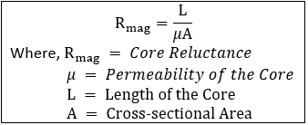

Hello World!
Hello World!
Iron is typically chosen as the core of the transformer since it is very permeable to flux. Recall that the core reluctance is given by:
Using the expression above we can clearly see that the permeability of the core is inversely related to the core resistance.